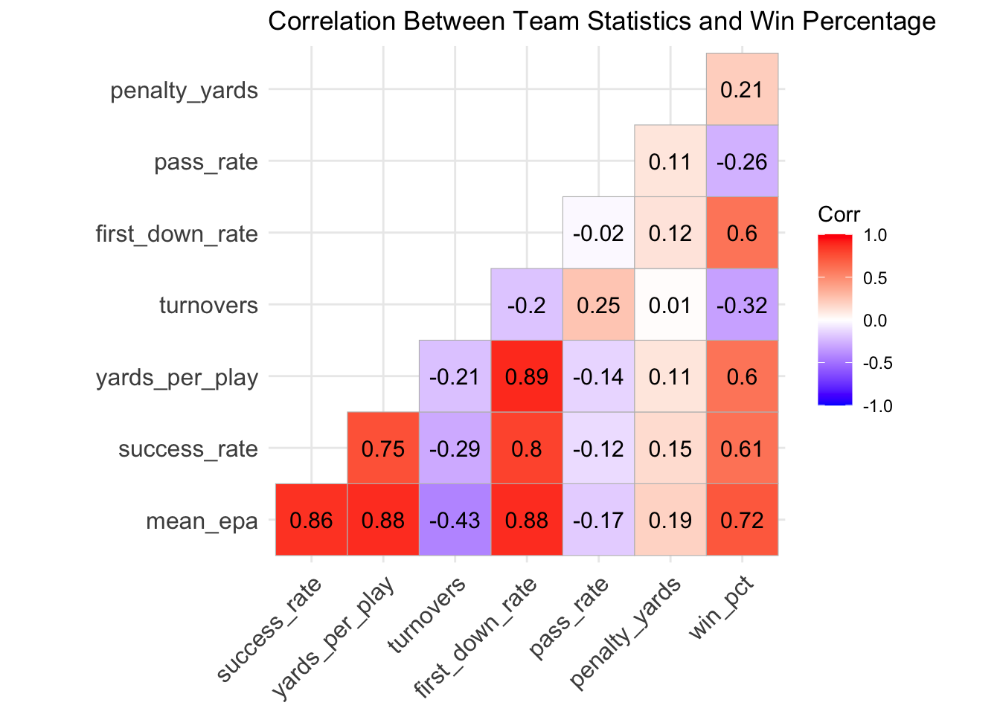
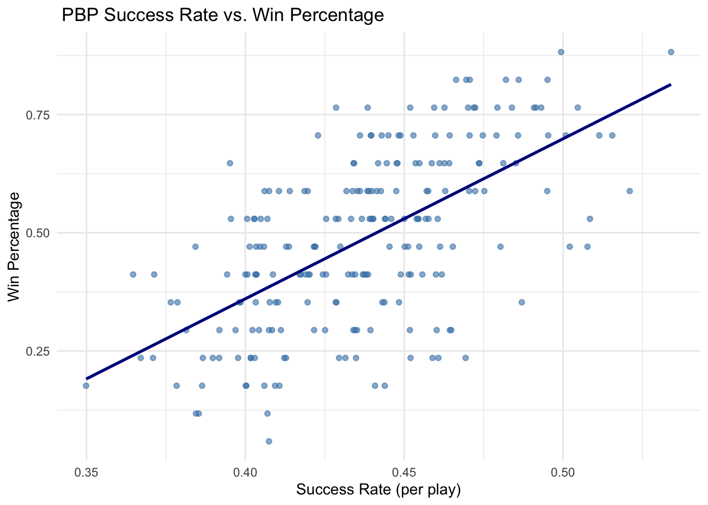

This exploratory data analysis aims to determine the most important statistics in determining an NFL team’s success through correlation based coefficient selection. Using the nflreadR package, I was able to access a plethora of team stats and chose a handful that I, as a football player, thought might be important in determining success over a given season. First, I had to filter the dataset slightly to a handful of variables I thought would be useful and then clean that dataset to ensure all values worked in conjunction with one another in the final data frame. I then created a team_wins variable, as the nflreadR package did not have one already available. Finally, I created a correlation heat map to determine which of these possible predictors was most positively correlated with team success (wins in a given season). What I found is that EPA was most correlated with win percentage; But, this felt a little fake due to the fact that EPA (Expected Points Added) is a premade model that chooses statistics that have already been deemed important to team success. To remedy this, I chose the next most correlated predictor in team_success. For football familiar people, this is how often a team’s offense can “stay ahead of the sticks,” or in other words, can a team get 4 yards on first down, 3 yards on second down, and convert on 3rd and 4th down. I think the most significant finding throughout this process though was not the fact that a team’s ability to move the ball is strongly correlated with win percentage, but instead that the majority of the strong positive correlation came from offensive metrics as opposed to defensive metrics.
#Correlation Analysiscorr_data <- team_summary %>%select(mean_epa, success_rate, yards_per_play, turnovers, first_down_rate, pass_rate, penalty_yards, win_pct)corr_matrix <-cor(corr_data, use ="pairwise.complete.obs")ggcorrplot(corr_matrix, lab =TRUE, type ="lower",title ="Correlation Between Team Statistics and Win Percentage")

Code
# Plot 1ggplot(team_summary, aes(x = success_rate, y = win_pct)) +geom_point(color ="steelblue", alpha =0.6) +geom_smooth(method ="lm", color ="darkblue", se =FALSE) +labs(title =" PBP Success Rate vs. Win Percentage",x ="Success Rate (per play)",y ="Win Percentage" ) +theme_minimal()

Source Code
---title: "Member 2: Colin M"---This exploratory data analysis aims to determine the most important statistics in determining an NFL team's success through correlation based coefficient selection. Using the nflreadR package, I was able to access a plethora of team stats and chose a handful that I, as a football player, thought might be important in determining success over a given season. First, I had to filter the dataset slightly to a handful of variables I thought would be useful and then clean that dataset to ensure all values worked in conjunction with one another in the final data frame. I then created a team_wins variable, as the nflreadR package did not have one already available. Finally, I created a correlation heat map to determine which of these possible predictors was most positively correlated with team success (wins in a given season). What I found is that EPA was most correlated with win percentage; But, this felt a little fake due to the fact that EPA (Expected Points Added) is a premade model that chooses statistics that have already been deemed important to team success. To remedy this, I chose the next most correlated predictor in team_success. For football familiar people, this is how often a team's offense can "stay ahead of the sticks," or in other words, can a team get 4 yards on first down, 3 yards on second down, and convert on 3rd and 4th down. I think the most significant finding throughout this process though was not the fact that a team's ability to move the ball is strongly correlated with win percentage, but instead that the majority of the strong positive correlation came from offensive metrics as opposed to defensive metrics. ```{r}library(nflreadr)library(dplyr)library(ggplot2)library(tidyr)library(janitor)library(ggcorrplot)library(scales)library(skimr)pbp <-load_pbp(2018:2024)team_stats <- pbp %>%filter(!is.na(posteam)) %>%group_by(season, posteam) %>%summarise(games_played =n_distinct(game_id),plays =n(),mean_epa =mean(epa, na.rm =TRUE),total_epa =sum(epa, na.rm =TRUE),success_rate =mean(success, na.rm =TRUE),yards_per_play =mean(yards_gained, na.rm =TRUE),turnovers =sum(interception + fumble_lost, na.rm =TRUE),first_down_rate =mean(first_down ==1, na.rm =TRUE),pass_rate =mean(pass ==1, na.rm =TRUE),penalty_yards =sum(penalty_yards, na.rm =TRUE) ) %>%ungroup() %>%rename(team = posteam) %>%clean_names()``````{r}games <- nflreadr::load_schedules(2018:2024)team_wins <- games %>%filter(!is.na(home_team), game_type =="REG") %>%mutate(home_win =ifelse(home_score > away_score, 1, 0),away_win =ifelse(away_score > home_score, 1, 0) ) %>%select(season, home_team, away_team, home_win, away_win) %>%pivot_longer(cols =c(home_team, away_team),names_to ="location",values_to ="team") %>%mutate(win =ifelse(location =="home_team", home_win, away_win)) %>%group_by(season, team) %>%summarise(wins =sum(win, na.rm =TRUE),win_pct = wins /17 ) %>%ungroup()team_summary <- team_stats %>%left_join(team_wins, by =c("season", "team"))skim(team_summary)sum(is.na(team_summary))``````{r}#Correlation Analysiscorr_data <- team_summary %>%select(mean_epa, success_rate, yards_per_play, turnovers, first_down_rate, pass_rate, penalty_yards, win_pct)corr_matrix <-cor(corr_data, use ="pairwise.complete.obs")ggcorrplot(corr_matrix, lab =TRUE, type ="lower",title ="Correlation Between Team Statistics and Win Percentage")``````{r}# Plot 1ggplot(team_summary, aes(x = success_rate, y = win_pct)) +geom_point(color ="steelblue", alpha =0.6) +geom_smooth(method ="lm", color ="darkblue", se =FALSE) +labs(title =" PBP Success Rate vs. Win Percentage",x ="Success Rate (per play)",y ="Win Percentage" ) +theme_minimal()```